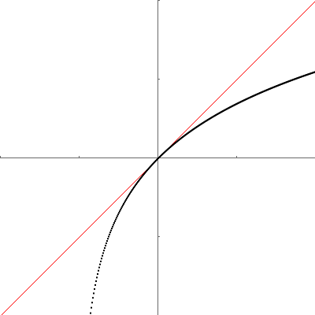

Utilator
Calvin (Deutschbein)
6 March 2023
Announcements
- You should have read AI & Accessibility texts and be formulating a response.
- Have a response paper written and posted by this evening.
- Read your peer's responses tomorrow.
- Today we'll show some more fun tricks.
- Homework for Wednesday
- Read “How AI Is Improving Accessibility”.
- Read at least one cited work, in the case of InnerVoice read the "about" page.
- Write an HTML/CSS response paper. 500 words / ~3k chars / ~10-20 theses.
- Discussion section Wednesday
Reflect
- 10 minutes in small groups, reflect on Omelas.
- Now what do you think LeGuin was trying to communicate with Omelas, one week latter?
- What do you think about LeGuin's thesis, whatever it may be?
- How can you apply this to questions of AI & Access.
Initial Feedback
- This is a writing class.
- Please don't capitalize random words in the middle of sentences.
- This is a technical class.
- You must meet the requirements for creating webpages with .js elements.
- Think about what else you may want to bring to discussion.
- Has technical improved life collectively for all, most, or some people?
- Who are the winners and losers of technological advancements?
Script elements
<!DOCTYPE html>
<html>
<body>
<p id="showEle">1</p>
<button onclick="update()">Click me</button>
<script>
let val = 1 ;
const showVar = document.getElementById("showEle") ;
function update()
{
val = 2 * val ;
showVar.innerText = val.toString() ;
}
</script>
</body>
</html>~Review Question 1
Consider the following HTML excerpt.
<p id="showEle">1</p>In the overall sample code shown, what was the usefulness of the the id attribute?
- It signifies in HTML what type of content is being held.
- It signifies for a CSS stylesheet how to style the content.
- It signifies for a JavaScript script or function to interact with this element.
- It signifies to the developer some information, akin to a comment.
~Review Question 2
Consider the following HTML excerpt.
<button onclick="update()">Click me</button> In the overall sample code shown, what was the usefulness of the the onclick attribute?
- It signifies in HTML what type of content is being held.
- It signifies for a CSS stylesheet how to style the content.
- It signifies for a JavaScript script or function to interact with this element.
- It signifies to the developer some information, akin to a comment.
Script elements
<!DOCTYPE html>
<html>
<body>
<p id="showEle">1</p>
<button onclick="update()">Click me</button>
<script>
let val = 1 ;
const showVar = document.getElementById("showEle") ;
function update()
{
val = 2 * val ;
showVar.innerText = val.toString() ;
}
</script>
</body>
</html>~Review Question 3
Consider the following JavaScript excerpt from within the HTML document.
let val = 1 ;This line is written outside of a function code block. This line:
- JS: Initializes a value to be used as the same starting value each time a function runs.
- JS: Holds a global value that is updates each time a function runs.
- HTML: Initializes a value to be used when loading the HTML document to be rendered.
- HTML: Holds a global value that will be rendered in HTML for which changes to the value will correspond to rendered changes.
~Review Question 4
Consider the following JavaScript excerpt from within the HTML document.
const showVar = document.getElementById("showEle") ;This line is written outside of a function code block. This line:
- JS: Initializes a value to be used as the same starting value each time a function runs.
- JS: Holds a global value that is updates each time a function runs.
- HTML: Initializes a value to be used when loading the HTML document to be rendered.
- HTML: Holds a global value that will be rendered in HTML for which changes to the value will correspond to rendered changes.
~Review Question 5
Consider the following JavaScript function from within the HTML document.
function update()
{
val = 2 * val ;
showVar.innerText = val.toString() ;
}Consider the first line function update()
- This uses .js keyword "update" to create an procedure named "function".
- This uses .js keyword "function" to create an procedure named "update".
- One or both of the words "function" or "update" are defined here and may be changed without issue.
- Both words are keywords in either .js or HTML.
~Review Question 6
Consider the following JavaScript function from within the HTML document.
function update()
{
val = 2 * val ;
showVar.innerText = val.toString() ;
}Consider the line val = 2 * val ;
- This is a built-in .js arithmetic operation over an integer.
- This is a built-in .js arithmetic operation over an float.
- This is an error because it defines a variable without
let - This is a HTML technology to update an element's content or attributes.
~Review Question 7
Consider the following JavaScript function from within the HTML document.
function update()
{
val = 2 * val ;
showVar.innerText = val.toString() ;
}Consider the excerpt showVar.innerText
- showVar is an HTML element, and innerText is an HTML attribute of that element
- showVar is an HTML element, and innerText is the content of that element
- showVar is a .js object, and innerText is a property of that object.
- showVar is a .js object corresponding to an HTML element, and innerText is an HTML attribute of that element.
~Review Question 8
Consider the following JavaScript function from within the HTML document.
function update()
{
val = 2 * val ;
showVar.innerText = val.toString() ;
}Consider the excerpt val.toString()
- val is an HTML element, and toString() is a .js function of that element
- val is an HTML element, and toString() is a CSS function of that element
- val is a .js object, and toString() is a method of that object.
- val is a .js object corresponding to an HTML element, and toString() is a function of that element.
HTML/CSS
HTML/CSS styles pages.
- If it shows on a page, HTML or CSS is doing it.
- HTML holds content.
- CSS styles content.
JavaScript allows changes to HTML/CSS without reloads.
- .js can relink HTML to different CSS styles
- .js can rewrite HTML content within a styled element
HTML/CSS/JavaScript have firm separation.
- .js may refer to HTML or CSS styles, but these are distinct from HTML elements or CSS rules.
- HTML attributes may refer to (call) .js functions, but these are attributes are distinct from functions themselves.
More Scripting
Continue with the <script> element.
- In the context of HTML/CSS, we may perform some limiting scripting.
- We will use scripting to write Utilator, an essay of sorts in response to the anti-utilitarian reading of Omelas.
<script>alert('Hello, world!');</script>
Writing Process
We understand the following:
- ∃ a reading of Omelas such that the text's thesis is claimed to be a refutation of utilitarianism.
- ∃ other readings of Omelas on e.g. the arts, equality, etc.
- ∃ numerical claims: Utilitarianism is premised on utilitarian calculus, such as of hedons, dolors, and utils
- ∃ scientific claims: Utilitarianism claims to be scientific, and LeGuin claims to be in conversation with scientists.
- ∃ numerical tests we may apply scientifically to Omelas to test for consistency with utilitarian calculus under different assumption sets.
My Hypothesis
Omelas is an attempted proof-by-contradiction* for the necessity of equality under utilitarianism. It proceeds roughly as follows.
- A utilitarian utopia maximizing utility by all persons receiving equal utility.
- Assume by contradiction, there is a community of n persons such that
- n - 1 persons are receiving m > 0 utils of utility.
- 1 person is receiving m' < m utils of utility.
- It may be the case the we wise to argue, say 1 person is receiving m' = -n * m utils.
- LeGuin relies on a visceral reaction to a textual description of m'
- I will instead attempt to formulate a mathematical argument.
*I don't remember how proofs work.
Key Insights
My key insights are as follows.
- I take the behavioral economics conception of loss aversion.
- I take the Marxist economic conception of materialism.
Loss aversion was first described by name in 1979, 6 years after Omelas was written.
I personally read LeGuin as anti-Marxist, but attribute this to the medium and not to the philosophy.
Loss Aversion
Loss aversion: the tendency to prefer avoiding losses to acquiring equivalent gains.

Loss Aversion
Imagine: You have 0 USD and a clean bill of health. Consider:
- You may maintain the status quo, or
- You may learn you require 400 USD of emergency medical care, but get a 400 USD gift certificate to Applebee's.
In both scenarios, you have net 0 USD in credits and debits, but one may feel preferable to you.

Loss Aversion
We can formulate this in other ways. Consider the following:
- A study that did not pass ethical review offers to do 400 USD of damage to your person or property in exchange for a 400 USD Applebee's gift card.
Do you accept?

Loss Aversion
Some economist claim* that many people will accept tradeoffs under more favorable conditions.
- A study that did not pass ethical review offers to do 4 USD of damage to your person or property in exchange for a 400 USD Applebee's gift card.
Do you accept?

Loss Aversion
I claim:
- In general, people prefer to avoid equivalent losses.
- In general, aversion to losses increases as losses grow larger
- That is, 400 USD in losses is more than twice as bad as 200 USD in losses.
- In general, gains experience diminishing marginal returns.
- That is, the first flavor blasted steak is more enjoyable than the 40th.
- That is, the nth flavor blasted steak provides no additional utility.
- At the status quo, adding or removing a dollar is roughly equivalent.
- I would accept 5 USD in damages to my phone screen for a 6 USD oatmilk mocha.
- At extremes, high loss aversion
- I invest more resources to avoid 10k in medical debt than I do to earn a 100k raise
Materialism
Scientific socialists such as Angela Davis and Karl Marx view social and political developments as being largely determined by economic conditions.
- I will refer to this as "materialism" in that social developments are determined by distribution of material. Engels also used this term.
- I assume that an individual's utility (happiness) is largely determined by their material allocation (USD). Consider if you feel this way. Why or why not?
- I assume that conversions of material to utility are subject to loss aversion. There is some literature to support this claim.
From there, all that remains is to define a function utility that accepts as input a level of material and produces as output a numer of utils.
Utility Functions
We may begin by naively supposing that utility is a linear function of material.
function utility(material)
{
return material ;
}While trivial to plot we do so, so that as our function develops we may inspect it visually.
SIDEBAR: Canvas
We introduce the canvas HTML element.
<body onload="draw();">
<canvas id="canvas" width="400" height="400"></canvas>
</body>Just as paragraphs allows us to change content with innerText, canvas elements allow us to draw rectangles.
function draw()
{
const plot = document.getElementById("plot") ;
const ctx = plot.getContext("2d");
ctx.fillRect(50, 50, 50, 50) ;
}SIDEBAR: Canvas
Rects default to black, background to transparent.

SIDEBAR: Canvas
I'll use a CSS style to put the created .png files on a high contrast white background and to scale them to slide size.
SIDEBAR: Canvas
Let's make a plot by adding axes in not-quite-black.
const size = 400 ;
const half = size / 2 ;
ctx.fillStyle = "dimgrey";
for (let i = 0 ; i < size ; i++ )
{
ctx.fillRect(i, half, 1, 1) ;
ctx.fillRect(half, i, 1, 1) ;
}
SIDEBAR: Canvas
There - now we can tell where things are at.

SIDEBAR: Canvas
Then we plot our utility function.
for (let i = 0 ; i < size ; i++ )
{
ctx.fillRect(i, utility(i), 1, 1) ;
}
SIDEBAR: Canvas
Ok we have a plot - let's clean this up a bit.

SIDEBAR: Canvas
Let's increase line thickness to 2 pixels and transpose the plot so all positive values to be up and to the right.
for (let i = 0 ; i < size ; i++ )
{
let j = size - utility(i)
ctx.fillRect(i, j, 2, 2) ;
}
SIDEBAR: Canvas
This looks nice enough to me, but we have no scale.

SIDEBAR: Canvas
Let's scale so this plot runs for (-2,2) and add we'll tick marks (not shown) .
const range = 2 ;
const full = range * 2 ;
let x, y, j ;
// tick marks - every size / range * 2 - snipped
// scale pixels to (-2,2)
for (let i = 0 ; i < size ; i++ )
{
x = (i / size) * full - range ;
y = utility(x) ;
j = ((range - y) / full) * size ;
ctx.fillRect(i, j, 2, 2) ;
}
SIDEBAR: Canvas
There we go! Now we iterate on utility.

Utility Functions (Again)
We may begin by naively supposing that utility is a linear function of material.
function utility(material)
{
return material ;
}
Utility Functions
In general, people prefer to avoid equivalent losses.
function f(x)
{
if (x < 0)
{
return 2 * x ;
}
return x ;
}We now use f(x) for simplicity.

Utility Functions
In general, aversion to losses increases as losses grow larger.
function f(x)
{
if (x > 0)
{
return x ;
}
return Math.log(x + 1);
}We now use f(x) for simplicity.

Utility Functions
In general, gains experience diminishing marginal returns.
function f(x)
{
return Math.log(x + 1) ;
}
Utility Functions
At the status quo, adding or removing a dollar is roughly equivalent.
function f(x)
{
return Math.log(x + 1) ;
}We show this by showing the instantaneous slope at zero is equal to one with a red tangent line.

SIDEBAR: Canvas
We get discontinuity when slope exceeds one as we were displaying at most one pixel in each vertical column of pixels.
const range = 2 ;
const full = range * 2 ;
let x, y, j ;
// tick marks - every size / range * 2 - snipped
// scale pixels to (-2,2)
for (let i = 0 ; i < size ; i++ )
{
x = (i / size) * full - range ;
y = f(x) ;
j = ((range - y) / full) * size ;
ctx.fillRect(i, j, 2, 2) ;
}
We will fix this by scanning in both i and j
SIDEBAR: Canvas
First, we precompute k values. These are the old j values, and will be compared to j values.
const ks = [] ;
// we do this off by one to help with bounds
for (let i = -1 ; i < size + 1 ; i++ )
{
x = (i / size) * full - range ;
y = f(x) ;
k = ((range - y) / full) * size ;
ks.push(k)
}
We compute what the old j value would be outside of the canvas as well - we'll come back to that.
SIDEBAR: Canvas
Now we iterate over each pixel, and check to see if a k is within 1 pixel of j.
for (let i = 0 ; i < size ; i++ )
{
for (let j = 0 ; j < size ; j++ )
{
// ensure shading when slope < 1
// we fill at least one pixel in every row
if (Math.abs(j - ks[i + 1]) < 1)
// Remember k's are off by one.
{
ctx.fillRect(i, j, 1, 1) ;
}
This means we will always shade at least one pixel per row - if slope is less than one, j and k are within 1 pixel more than once.
SIDEBAR: Canvas
Now we iterate over each pixel, and check to see if a k is within 1 pixel of j.
// ensure shading when slope > 1
// fill at least one pixel in every column.
closer = Math.min(Math.abs(j - ks[i]),Math.abs(j - ks[i+2]))
if (Math.abs(j - ks[i+1]) < closer)
{
ctx.fillRect(i, j, 2, 2) ; // line was 2 pixels
}
This means we will always shade at least one pixel per column - if slope is greater than one, we simply keep adding rectangles until our vertical position is closer to another horizontal position than the current horizontal position.
SIDEBAR: Canvas
That's better!

Presumably there's like libraries to do this or whatever.
My Hypothesis (Again)
Utilitarianism demands equality when considering loss aversion and materialism.
- Consider the set H of humans hi. Assume WLOG |H | = 2.
- We equalize resource distributions and utility scores to zero.
- We take someone with 0 material, m(hi) = 0, to have 0 material more than average
- We take someone with 0 utility, u(m(hi)) = 0, to be however happy they are when receiving the average amount of material.
- Our resource constraint is 0 = ∑m(h) for h ∈ H
- Consistent with loss aversion, we take a someone's utility u(m(hi)) to be
function f(x) { return Math.log(x + 1) ; }
My Hypothesis (Again)
Utilitarianism demands equality when considering loss aversion and materialism.
- ∑u(m(h)) for h ∈ H is maximal when ∀h ∈ H, 0 =m(h)
- Assume by contradiction than exists a greater value - then ∃ h ∈ H s.t. 0 >m(h)
- ∃ h ∈ H s.t. 0 > m(h)
- ∃ h' ∈ H s.t. 0 < m(h)
- Our resource constraint is 0 = ∑m(h) for h ∈ H
- So we must show that ∃ x > 0 s.t. u(x) + u(-x) > 0.
- u(x) = ln(x+1)
- ∀ x > 0, ln(x + 1) < x
- u(-x) = ln(-x+1)
- ∀ x < 0, x < ln(x + 1)
- u(x) = ln(x+1)
- ∀ x > 0, u(x) < x ∧ u(-x) < -x
My Hypothesis (Again)
Utilitarianism demands equality when considering loss aversion and materialism.
- Assume by contradiction ∃ a greater value for ∑u(m(h)) for h ∈ H than 0
- We show ∀ x > 0, u(x) < x ∧ u(-x) < -x
- We show ∀ x > 0, u(x) + u(-x) < -x + x
- We show ∀ x > 0, u(x) + u(-x) < 0
- This is a contradiction.
∴ Utilitarianism demands equality when considering loss aversion and materialism.∎
Full source code
https://github.com/cd-public/eths23/blob/main/html/utilator.html